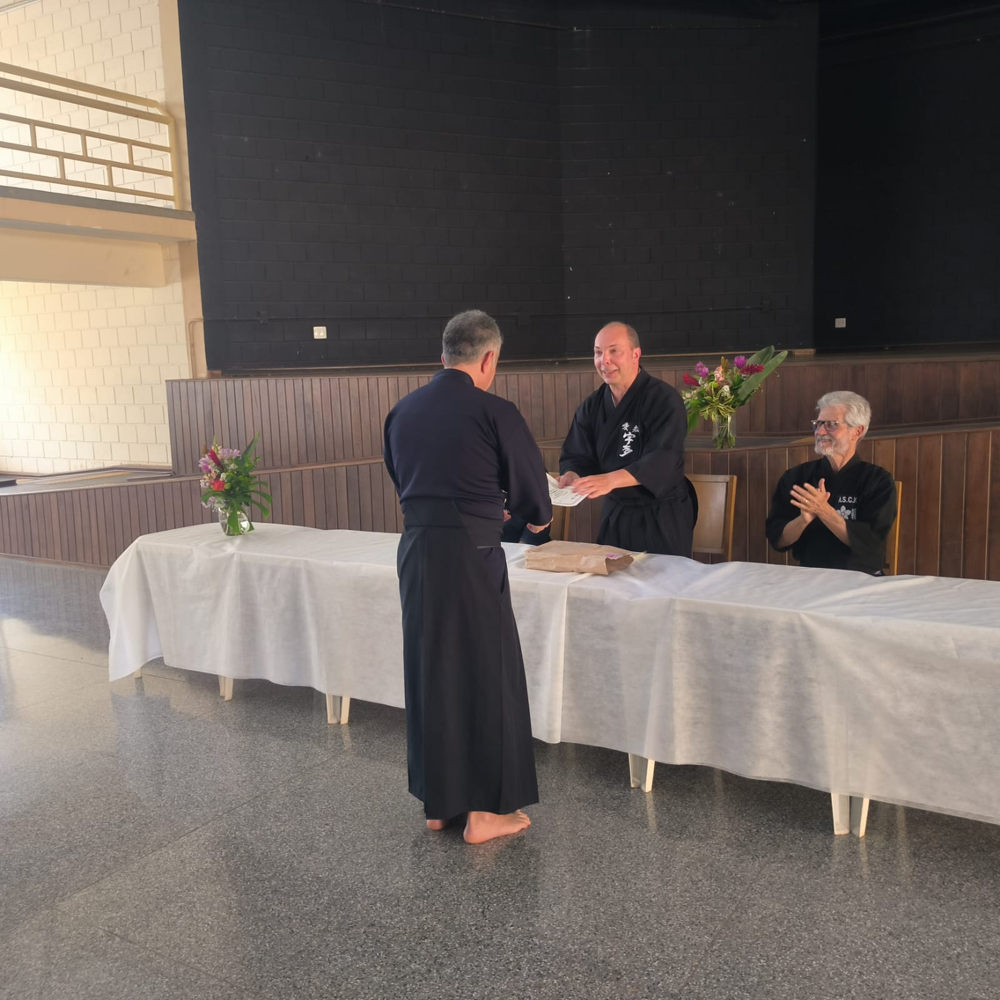

Notícias
1° Gasshuku da Genbukan Brasil 22/08/2025 a 24/08/2025 - São Carlos, São Paulo
Foto com os participantes do 1° Gasshuku da Genbukan Brasil.
31/08/2025
No final de semana do dia 22/08 a 24/08 realizou-se o primeiro Gasshuku da Genbukan Brasil, na cidade de São Carlos, São Paulo, com o apoio da Associação de São Carlos de Kendo e Iaido (ASCK).
Este primeiro evento oficial da Genbukan Brasil teve por objetivo o aprofundamento e aprimoramento técnico do Muso Jikiden Eishin Ryu da linhagem de Oshita Masakazu Sensei, Kyoshi 8º Dan, e contou com a presença orientação técnica direta de seu aluno Alexandre Pereira Sensei, Renshi 7º Dan, o primeiro brasileiro a obter Nanadan (7º Dan) em Iaido. A enorme dedicação, prestatividade e atenção de Alexandre Pereira Sensei tornou esse Gasshuku um evento único, uma oportunidade excepcional de aprendizado, desenvolvimento e o polimento técnico de todos os participantes.
Realizamos no sábado, dia 23/08, um treino de Zen Ken Ren Iaido com a participação de Kenshi de São Carlos e demais regiões do estado de São Paulo. Uma cerimônia de abertura, com a presença de Alexandre Pereira Sensei, José de Anchieta Rodrigues Sensei e Akemi Nakahara Sensei, representando o presidente da ASCK Kenji Nakahara Sensei, na mesa de cerimônia, inauguraram o início oficial do primeiro Gasshuku da Genbukan Brasil. A presença e participação de todos contribuíram para tornar este Gasshuku um enorme sucesso. O Gasshuku também foi uma oportunidade exímia de fortalecer os laços entre os praticantes membros da Genbukan Brasil de diversas regiões do país, incluindo Bahia, Pernambuco, Rio Grande do Sul, São Paulo e Distrito Federal.
Gostaríamos de agradecer o apoio fundamental da Associação São Carlos de Kendo e Iaido, que mesmo antes da formação oficial da Genbukan Brasil, tem recebido calorosamente Alexandre Pereira Sensei e demais Kenshi para treinos, tornando-se fundamental para a própria existência da Genbukan Brasil. Destacamos o esforço e a diligência de Akemi Nakahara Sensei, Kenji Nakahara Sensei, Harumi Nakahara Sensei e José de Anchieta Rodrigues Sensei. Agradecemos profundamente o trabalho e empenho de Alexandre Pereira Sensei por ter tornado o primeiro Gasshuku da Genbukan Brasil um evento realmente histórico.
Aguardamos ansiosamente o próximo Gasshuku em 2026!
Disponibilizamos abaixo o belíssimo discurso de abertura do Sensei Kenji Nakahara, presidente da ASCK.
“Boa tarde! Primeiramente, peço desculpas pela ausência, devida a demandas de trabalho. Em nome da Associação São Carlos de Kendo e Iaido, dou as boas-vindas a todos os praticantes e instrutores da Genbukan Brasil, nesse que é o seu 1º encontro presencial. Saúdo especialmente o sensei Alexandre Pereira, representante da 22ª geração da honrada escola Muso Jikiden Eishin Ryu, na linhagem de Oshita Masakazu-sensei, 8º Dan.
Na vida, os encontros são fortuitos. Porém, o que faremos deles e como os cultivaremos depende de nós. Assim foi para nossa associação, que teve o privilégio de, por forças maiores, ter o contato com Alexandre-sensei, por intermedio de nosso então kenshi, Gil Vicente, quando morou no Japão durante sua bolsa de doutorado.
O contato com o iaido rapidamente cativou nosso então kenshi, Sr. Anchieta, que abraçou a prática e, por valor de seu caráter, tanto cultivou esse precioso contato, gerando os belos frutos do iaido em nossa academia.
A disciplina e comprometimento, tanto do Sr. Anchieta, quanto de Alexandre-sensei, proporcionaram a aquele treinar por anos, até alcançar o 4º Dan de iaido, essencialmente com base em treinos e observações online. Em contrapartida, creio que a jornada dos praticantes desse koryu no Brasil igualmente contribuiu para o desenvolvimento de Alexandre-sensei, que orgulhosamente se tornou o primeiro latinoamericano a alcançar o 7º Dan de iaido.
O brasão da Genbukan Brasil ilustra o “MYOGA”, um gengibre japonês, que carrega a representação da perseverança, mais que adequada a todos aqui: praticantes tão aplicados em condições ainda tão desafiadoras. Nossa florista encontrou na flor de cúrcuma, ou açafrão, essas belas flores roxas em nossos arranjos sobre a mesa, uma correspondente disponível em nosso país, para homenagear esse encontro e seu koryu.
Assim, com a alegria por amizades e encontros tão felizes e duradouros, chegamos a esse dia, podendo receber, em nosso dojo, esse evento inédito da Genbukan Brasil.
Desejamos um excelente evento a todos!
São Carlos - SP, 23 de agosto de 2025.
KENJI NAKAHARA ROCHA
Presidente da Associação de São Carlos de Kendo e Iaido (ASCK)”
Arranjo de flores, com a flor de cúrcurma ou açafrão, correspondente disponível no Brasil, à flor de gengibre, Myoga.
Da esquera para a direita: Akemi Nakahara Sensei, Alexandre Pereira Sensei e José de Anchieta Rodrigues Sensei preparando-se para o treino.
Alexandre Pereira Sensei entregando os certificados de participação no Gasshuku.
José de Anchieta Rodrigues Sensei ao lado do arranjo de flores.
Participantes do 1° Gasshuku da Genbukan Brasil.
José de Anchieta Rodrigues Sensei preparando-se para o treino.
Alexandre Pereira Sensei explicando sobre tenouchi para Renato Alcantara.

Treinamento de Iaido.
Alexandre Pereira Sensei explicando sobre nukitsuke.
Alexandre Pereira Sensei explicando sobre noutou.
Alexandre Pereira Sensei falando aos participantes do 1º Gasshuku da Genbukan Brasil.